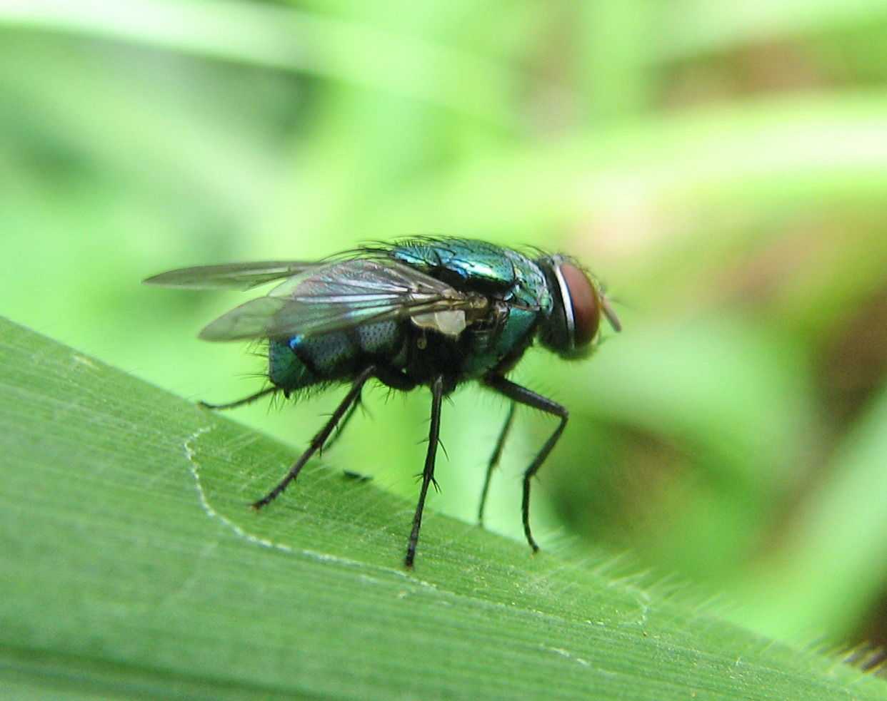

Côn trùng


Côn trùng hay còn gọi là sâu bọ, là một lớp (sinh vật) thuộc về ngành động vật không xương sống, chúng có bộ xương ngoài làm bằng kitin, cơ thể có ba phần (đầu, ngực và bụng), ba cặp chân, mắt kép và một cặp râu. Côn trùng là nhóm động vật đa dạng nhất hành tinh, gồm hơn một triệu loài đã được mô tả và gồm hơn một nửa số sinh vật sống.[2][3] Số loài còn sinh tồn được cho là từ 6 – 10 triệu loài,[2][4][5] và đại diện cho 90% dạng sống của các loài động vật khác nhau trên Trái Đất.[6] Côn trùng có thể sống được ở hầu hết các môi trường sống, mặc dù chỉ có số ít các loài sống ở biển và đại dương, nơi mà động vật giáp xác chiếm ưu thế hơn.
Kích thước côn trùng dao động khoảng từ trên dưới 1 mm tới khoảng 180 mm về chiều dài. Côn trùng có cơ thể phân đốt và được bảo vệ bởi một bộ xương ngoài, một lớp cứng được cấu tạo chủ yếu bởi kitin. Cơ thể được chia thành đầu, ngực và bụng. Trên đầu có một cặp râu là cơ quan cảm giác, một cặp mắt kép và 2 mắt đơn (ở giai đoạn sâu non có thể là 6 mắt đơn) và một miệng. Ngực có 6 chân (mỗi đốt một cặp chân) và 2 – 4 cánh (ở các loài có cánh). Bụng có cơ quan bài tiết và cơ quan sinh sản. Côn trùng có một hệ tiêu hoá hoàn chỉnh, gồm một ống liên tục từ miệng tới hậu môn, khác với nhiều loài động vật chân khớp đơn giản khác có hệ tiêu hoá chưa hoàn chỉnh. Cơ quan bài tiết gồm các ống Malpighi, với chức năng thải các chất thải chứa nitơ, ruột sau làm nhiệm vụ điều hoà áp suất thẩm thấu, đoạn cuối ruột sau có khả năng tái hấp thu nước cùng với muối natri và kali. Vì vậy, côn trùng thường không bài tiết nước ra cùng với phân, thực tế thì chúng cho phép dự trữ nước trong cơ thể. Quá trình tái hấp thu này giúp chúng có thể chịu đựng được với điều kiện môi trường khô và nóng.
Hầu hết côn trùng có hai cặp cánh liên kết với đốt ngực 2 và 3. Côn trùng là động vật không xương sống duy nhất đã tiến hoá theo hướng bay lượn và chính điều này đóng một vai trò quan trọng trong sự thành công của chúng. Các côn trùng có cánh, và những côn trùng không cánh thứ sinh đã tạo nên nhóm có cánh (Pterygota). Cơ chế bay của côn trùng cho đến nay vẫn chưa được tìm hiểu một cách đầy đủ, người ta cho rằng nó phụ thuộc rất lớn vào khối không khí nhiễu loạn do cánh tạo ra. Ở những côn trùng nguyên thuỷ lại dựa chủ yếu vào tác động của hệ cơ lên cánh và cấu trúc của cánh. Ở những bộ tiến hoá hơn như Neoptera, cánh thường gập lại trên lưng khi chúng nghỉ ngơi. Ở những côn trùng này, cánh được hoạt động bởi các cơ bay gián tiếp mà giúp cánh vận động bằng cách ép mạnh lên thành ngực. Những cơ này có thể co lại khi bị căng ra mà không cần sự điều khiển của hệ thần kinh, điều này cho phép chúng tạo ra tần số co giãn cơ tương đối cao.
Côn trùng sử dụng cơ quan hô hấp khí quản để vận chuyển ôxy vào trong cơ thể. Các ống khí này mở ra ở bề mặt cơ thể và được gọi là lỗ thở (mỗi đốt có 1 đôi lỗ thở ở 2 bên), từ đây không khí được dẫn vào hệ thống khí quản. Không khí đi vào các mô thông qua các nhánh khí quản. Vòng tuần hoàn của côn trùng, cũng như tất cả các chân khớp khác là một hệ hở. Tim bơm dịch huyết vào động mạch qua xoang tim.
Côn trùng nở từ trứng, trải qua nhiều lần lột xác trước khi đạt tới kích thước trưởng thành của loài. Cách sinh trưởng này là bắt buộc vì chúng có bộ xương cứng bên ngoài, được cấu tạo chủ yếu bởi kitin (chitin). Lột xác là quá trình mà con vật thoát khỏi lớp xương ngoài cũ để tăng lên về kích thước, sau đó hình thành nên bộ xương ngoài mới, vì lớp xương ngoài bằng kitin hoặc đá vôi của các loài chân khớp không thể tăng lên về kích cỡ, trong khi cơ thể của chúng luôn luôn lớn lên cho tới lúc trưởng thành. Ở hầu hết các loài côn trùng, giai đoạn trẻ được gọi là thiếu trùng (nymph). Thiếu trùng có thể có cấu tạo tương tự như Thành trùng như ở châu chấu (mặc dù cánh vẫn chưa chỉ phát triển đầy đủ cho đến giai đoạn trưởng thành). Đây là những côn trùng biến thái không hoàn toàn. Ở những côn trùng biến thái hoàn toàn (hầu hết côn trùng), trứng nở thành dạng ấu trùng, có dạng giống như giun đất, gọi là giai đoạn sâu non. Ấu trùng phát triển và cuối cùng biến thái thành nhộng (pupa - một giai đoạn được bao bọc trong kén) ở một số loài. Ở trạng thái kén, chúng trải qua những thay đổi đáng kể về hình dạng và cuối cùng chui ra khỏi kén như một con trưởng thành hay còn gọi là hoá vũ. Bướm là một ví dụ tiêu biểu cho bọn côn trùng có biến thái hoàn toàn.
Quay về trang chủ